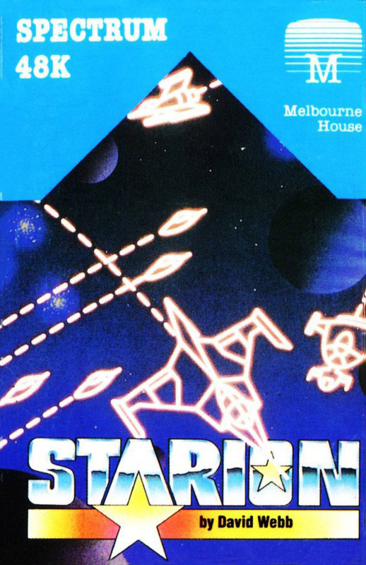
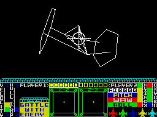
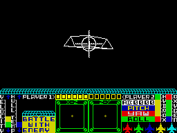

Starion


{kind=link}

| Publisher: | Melbourne House |
| Price: | £7.95 |
| Year: | 1985 |
| Source: | CRASH, Issue 16 |

Melbourne House have become established as one of the more innovative of software houses. Starion, their latest game introduces concepts and ideas that are both new and complex.
The story takes place in the year 2010 and you play the role of Starion, fresh from the space academy. You have been trusted with the one and only timeship, your mission, to rectify the devastation wrought in the space-time continuum by evil aliens. The aliens have wrought this evil by removing items of historical significance from important events. Consider this; suppose that some time in the future an alien comes back into the past and abducts Starion, then he won’t be around to undo the evil work of the aliens and the universe will indeed be a rotten place in which to live. The letters that go to make up Starion’s name could form an alien cargo as they are transported away from their correct time zone — if you can collect those letters and re-arrange them to form the correct word, Starion, you will be allowed access to the next stage of the game.

So the first part of the task is to patrol the outer regions of space intercepting and destroying the alien ships. As you attack and destroy each enemy ship it will re-assemble and form a letter, this must be collected and stowed aboard your ship. Later, when you have collected the required number of letters, you will be asked to unscramble them, rearranging them to make a well known word that fits some period in time. So far so good. Now you must locate the entrance to a time warp and fly into it, whereupon a time grid will be displayed. Each grid has nine time zones and you must decide which of the time zones contains the historical event that your cargo will fit (were it V-I-C-T-O-R-Y you might think of Nelson and the Battle of Trafalgar — get the picture)?
When you land you will be told the problem, if the cargo you recovered solves it then you will be rewarded with fresh oxygen and fuel to enable you to fly off and solve the next zone. However, should your cargo not fit the current problem then you will need to attack the other enemy ships found within that zone, this will enable you to gain enough energy to escape and find the correct zone.

To give you some idea of the task ahead here’s the nature of the space-time continuum. In all there are 3 time blocks, within each block there are 9 time grids, each time grid has 9 time zones and space has 3 dimensions. Big isn’t it? in fact altogether Starion has 243 time zones to be solved. After correcting history in the 9 zones of a grid you will gain access to the next one by solving the anagram made from the first letter of each of the zone words. Access to the next block requires the first letter of each of the grid words to be solved. To reach ‘event zero’ and the ultimate rank of ‘creator’ the player must form the pass-word from the first and last letters of each of the three grid words.
If this begins to sound like an educational program, don’t panic. The screen display shows instantly that this is a 3D space arcade game. The machine provided for Starion makes the space shuttle look like a hot air balloon. The cockpit view uses wire frame 3D to describe the enemy ships and letters. Below, the instrument panel indicates details on speed, hull temperature, enemy location, pitch, role, yaw, fuel and oxygen levels. The bi-planar scanners show the location of other objects, horizontally and vertically, be they ships, mines, missiles or just debris. Above the scanners the year of the current time zone is shown, vital when trying to solve the time zone problems. The hull temperature is also vital because the outside temperature will increase with speed and excessive lazer fire. The hull can also be destroyed by direct hits from enemy weapons or collision with space rubbish. The general debris cannot be destroyed so you will be forced to steer around it. Points are awarded in accordance with the speed with which the player completes each stage of the game, as well as for the destruction of enemy targets. The player will be promoted depending on the number of zones, grids and blocks that have been solved. Finally, despite the loneliness of outer space, Starion is a two-player game.
CRITICISM
‘Somebody is bound to say it so I want to be the first. Starion is Melbourne’s answer to Elite. A CBM expert was seen openly weeping when he saw the quality of the graphics compared to the CBM Elite, and with very good reason. Words cannot adequately describe the immense realism that the graphics manage to portray — to say that they are astonishing, astounding, phenomenal and... well startling, doesn’t even begin to say it. The task set by the game, collecting letters by shooting the enemy ships, may seem a little uninteresting but when you have played the game for a while you quickly realise just how clever the idea is. Not only does the game test an arcade gamer’s skills to the limit but the word and historical puzzles force the grey matter into overdrive. I am very impressed. Congratulations to David Webb and Melbourne House, this one is special.’
‘Starion — this must be a new concept in 3D graphics. Everything is drawn with extreme precision very quickly and very smoothly. I’m surprised by how complex shapes can be spun, rotated and whizzed towards you — I must say, the effect is amazing. You may have thought that Darkstar was fast — yes it was, but all the shapes were simple ones. This one isn’t quite that fast, but you couldn’t play Darkstar on the fastest speed anyway. You can mindlessly blast your way through space and collect various letters to make up an anagram. These anagrams aren’t too long, but they still take a considerable time to work out, all of them being obvious — once you know what they are! One thing that confused me was the X, Y, Z axes scanner, I just couldn’t figure out how best to use it but I’m sure it will come eventually. This is a fun-packed, all-action, thinking game where the player requires a little more skill than just fast responses to progress throughout the game.’
‘My initial reaction to this superb game is that it’s a little like Code Name Mat — at least in scope, and certainly in ship handling. The bi-planar scanners work very similarly, and take a little getting used to. The speed and movement of the 3D wire frame objects is marvellous. I also like the front end, where controls are defined while a white bar loops through the options — perhaps a trifle fast however. Beware the effect of entering the space-time continuum because the effect looks as though the program is crashing — rather spectacular! Starion has a lot of playability, and due to its size, I think its addictive qualities are likely to be high. Absolutely worth the money.’
COMMENTS
| Control keys: | All definable, 4 directions and fire, plus accelerate and decelerate |
| Joystick: | Kempston, Sinclair 2, Cursor type |
| Keyboard play: | Very responsive but complicated without a joystick |
| Use of colour: | Simple in space, but excellent generally |
| Graphics: | Excellent wire frame, very fast and extremely smooth, good instruments |
| Sound: | Continuous, not over exciting, toggles on/off |
| Skill levels: | 1 |
| Lives: | 5 |
| Screens: | Scrolling action set in infinity! |
| Special features: | 1 or 2-player games |
| General Rating: | An excellent game which combines arcade skills with nifty thinking and which could well be played by two on the same side as well as against each other. |
| Use of Computer: | 92% |
| Graphics: | 95% |
| Playability: | 93% |
| Graphics: | 89% |
| Addictive Qualities: | 90% |
| Value For Money: | 92% |
| Overall: | 94% |